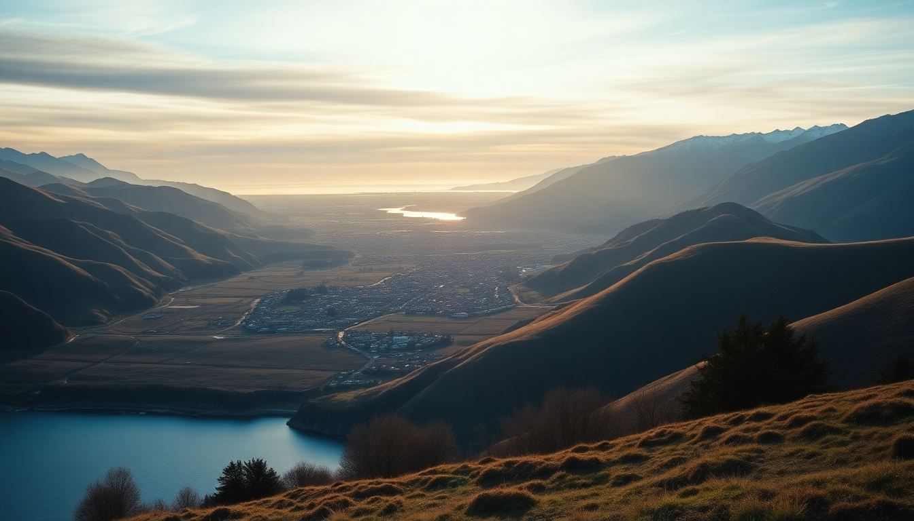

10-Day South Island New Zealand Road Trip Itinerary

I spent ten days driving the South Island in a rented Toyota Camry, and I came away convinced that this is one of the best road-trip routes on the planet — if you keep it simple. The key is not to overstuff the schedule. You need time to let the weather do its thing (it will), time to hike a trail because it looks good, and time to just sit by a lake. Here’s exactly how I did it, what I’d skip, and what I’d do again in a heartbeat.
What is the best route for a 10-day South Island road trip?
Fly into Christchurch, drive west to Franz Josef, then south through Wanaka to Queenstown, and finish with a day trip to Milford Sound. It’s a loop that minimizes backtracking and hits the heavy hitters without feeling like a forced march.
I landed in Christchurch, spent one night to get over the jet lag, then picked up the car. Driving is on the left, and the roads are narrow — especially the stretch from Franz Josef to Wanaka (the Haast Pass). Give yourself extra time for photo stops and one-lane bridges.
- Day 1-2: Christchurch (pick up car, explore the city)
- Day 3-4: Franz Josef (glacier hike or heli-hike)
- Day 5-6: Wanaka (lake walks, Rob Roy Glacier track)
- Day 7-8: Queenstown (bungee, gondola, Fergburger)
- Day 9: Milford Sound (drive from Queenstown early)
- Day 10: Queenstown (fly out)
Is it worth visiting Christchurch, or should I skip it?
Christchurch surprised me. After the 2011 earthquake, the city center has rebuilt itself with a creative, almost experimental energy. I’d recommend one full day here, but not more unless you like museums.
The Cardboard Cathedral on Hereford Street is a quick, free stop. The Riverside Market on Oxford Terrace became my lunch spot — I grabbed a lamb shawarma from Bread & Circus and sat by the Avon River. For dinner, Twenty Seven Steps on New Regent Street does solid New Zealand fare (the lamb rump was perfect). I stayed at The Classic Villa on Worcester Street — a boutique hotel walking distance to everything.
- Cardboard Cathedral — quick, free, architecturally interesting
- Riverside Market — best food hall in the city, try the dumplings
- New Regent Street — pastel-colored shops and cafes
- The Classic Villa — quiet, central, good breakfast included
How do I actually see Franz Josef Glacier without wasting money?
The glacier itself is visible from the valley floor, but the ice is dirty and receded. To get on the ice, you need a helicopter. I booked a heli-hike with Franz Josef Glacier Guides — they fly you up, strap on crampons, and walk you through ice tunnels and crevasses. It’s expensive (around $400 NZD), but it’s the only way to see the blue ice.
Skip the “glacier valley walk” — you just stare at a grey moraine from a distance. Instead, spend the afternoon at Waiho Hot Tubs on Cron Street. It’s a set of private cedar hot pools fed by glacier water. Book ahead in summer. I stayed at Rainforest Motel on Cowan Street — basic but clean, with a kitchenette.
- Franz Josef Glacier Guides heli-hike — book the earliest slot for better weather odds
- Waiho Hot Tubs — book online, 45-minute slots
- Rainforest Motel — affordable, close to the main strip
- Monsoon Bar & Restaurant — decent pizza and a fireplace
What’s the real deal with Wanaka — is it just Queenstown’s quieter sibling?
Wanaka is quieter, cheaper, and in my opinion, more beautiful than Queenstown. The lakefront is less crowded, the hiking is excellent, and the town feels like a real community instead of a tourist machine.
I spent two nights at Edgewater Hotel — rooms face the lake, and you can walk into town along the water in 15 minutes. The Rob Roy Glacier Track is a 3-hour return hike up a valley with waterfalls and a glacier at the end. It’s free, and the track is well-maintained. For dinner, Kika on Ardmore Street does small plates — the venison tartare is the best thing I ate on the whole trip. Don’t miss That Wanaka Tree (yes, it’s just a tree in the lake, but the light at sunset is real).
- Rob Roy Glacier Track — easy drive to the trailhead, no booking needed
- Edgewater Hotel — book a lake-view room, worth the upgrade
- Kika — reserve ahead, the lamb ribs are also excellent
- That Wanaka Tree — go at golden hour, fewer people
What are the must-do things in Queenstown (and what’s overrated)?
Queenstown is the adrenaline capital, but it’s also the most touristy spot on the South Island. The town itself is a strip of souvenir shops and chain restaurants, but the setting — on Lake Wakatipu with the Remarkables behind it — is stunning.
Do the Skyline Gondola for the view, but go at 4 PM to avoid the worst lines. The luge track at the top is fun for exactly one run. Fergburger on Shotover Street is legitimately good (get the “Mr. Big Stuff” with blue cheese), but expect a 30-minute wait — go at 10 AM or 3 PM to skip the line. AJ Hackett Bungy at the Kawarau Bridge is the original bungy site; I jumped and it was terrifying and worth it. Skip the Steamer Wharf restaurants — overpriced and mediocre. Instead, eat at Rata on Ballarat Street (Michelin-starred chef, but relaxed vibe) or The Cow for cheap pizza.
- Skyline Gondola — book online, take a jacket for the top
- Fergburger — go off-peak, eat it by the lake
- AJ Hackett Bungy Kawarau Bridge — book the “touch the water” option
- Rata — reserve for dinner, the blue cod is perfect
Is Milford Sound worth the long drive from Queenstown?
Yes, but only if you commit to the full day. It’s a 4-hour drive each way from Queenstown, and the road (State Highway 94) is winding and often wet. I left at 5:30 AM and was glad I did — the first cruise of the day has the fewest boats on the water.
Book a cruise with RealNZ — the smaller boats get closer to the waterfalls. The Mitre Peak view from the water is the iconic shot, and the seals on the rocks near the Tasman Sea are a bonus. The rain makes the waterfalls better, so don’t cancel if it’s drizzling. Pack a rain jacket and snacks — the café at the terminal is overpriced and mediocre.
- RealNZ Nature Cruise — 2 hours is enough, book the 9 AM departure
- Drive the Homer Tunnel — single-lane, expect 10-minute delays
- Pack layers — it’s colder and wetter than Queenstown
- Gas up in Te Anau — last station before the sound
FAQ
What’s the best time of year for this itinerary? Late October through April (spring to autumn). I went in November, and the weather was mixed — rain in Franz Josef, sun in Wanaka, clouds in Milford. Summer (December-February) is busiest but has the most daylight. Winter (June-August) means snow chains on the passes and some roads closed.
Do I need to book accommodations far in advance? Yes, for Franz Josef and Milford Sound. Franz Josef has limited lodging, and Milford Sound has exactly one hotel (Milford Sound Lodge). I booked three months out for November and still had limited options. Queenstown and Wanaka have more supply, but summer weekends fill up fast.
Is the drive from Franz Josef to Wanaka dangerous? It’s slow and narrow, not dangerous if you drive defensively. The Haast Pass has one-lane bridges and sharp corners. I averaged 60 km/h for the 4-hour drive. Watch for sandflies at the stop-offs — the West Coast is notorious for them. Bring repellent.